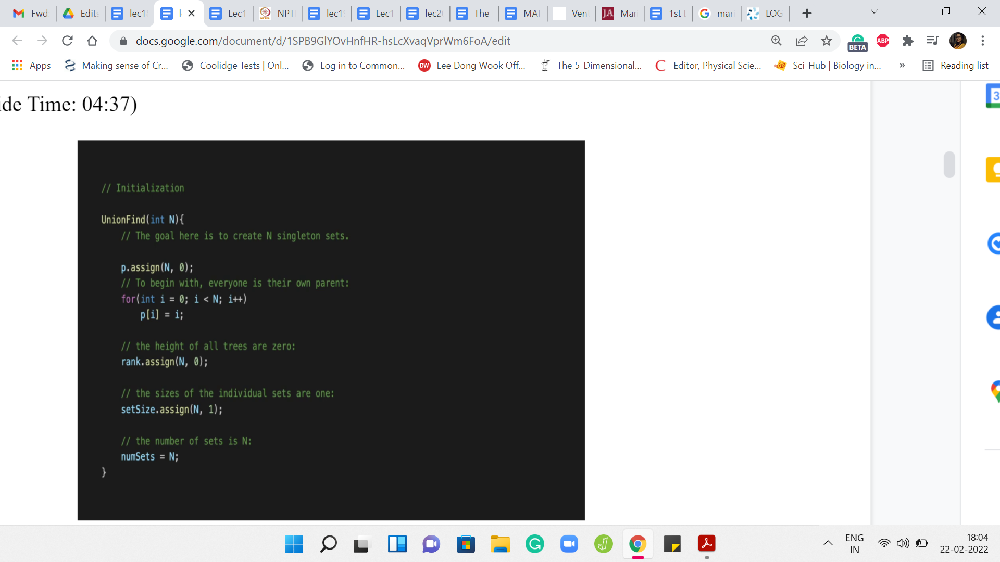

Disjoint Set Union - Module 1 (An Introduction-Part III)
Lecture - 18
Disjoint Set Union - Module 1 (An Introduction-Part III)
(Refer Slide Time 00:11)

Welcome to the final segment of the first module on ‘Disjoint Set Union.’ This is the third and the last video in a three-part series. I hope you have seen the first two videos because I do not expect this one to make a lot of sense without the context from there. This is not a standalone video. We are going to actually implement the algorithms that we have already discussed for the two main DSU operations, which are the ‘find’ set and ‘union’ set.
If you recall, we discussed a couple of different heuristics. First, we talked about ‘union by depth,’ and then we talked about ‘path compression’ and ‘union by rank.’ Basically, that is what we are going to implement and the specific implementation here is in C++ but it is quite easily adaptable to Python or any other language of your choice. The implementation here is really elegant and simple and it follows the pseudocode quite closely. I think we will have some fun.
I should say that this implementation is heavily borrowed from the fourth edition of the competitive programming book. Even if you do not have access to the book, there is a GitHub repository that goes with the book and that is freely accessible. You can look that up. There is a link in the description. They have implemented a lot of other data structures as well. This is a really useful reference to have.
You will find code and at least Python, C++ and Java as far as I remember, and maybe some other languages as well. This is a really useful thing to bookmark and keep handy. For DSU in particular, if you want to test out the data structures that you implement, Codeforces has a really nice series of practice problems for DSU.
In fact, you will find quite a large collection of DSU based problems there. Unfortunately, we will not have enough time to actually go over all of them. But we are going to look at a couple of more examples from this section. Again, I will point you to exactly where you can go. This is not a standard contest. You will have to have a Codeforces account and then you can go to the EDU tab on the top of the navigation.
This is the education section and there is one course that covers many different topics. But you want to look out for the one on ‘Disjoint Set Union,’ which in turn has multiple chapters. Just go to the first one and go to the practice section. You will find a customized contest with a bunch of problems. What we will be talking about here will be kind of geared towards solving the first two problems, which are essentially just asking you to implement DSU.
That is the first problem. It is asking you to implement, basically find and union, and also this extra operation which asks you if two elements belong to the same set or not. We are going to look at how to take care of that. In the second problem, it is very similar, except that you are also asked to be able to not just find the set that an element belongs to but you are also asked to return the minimum and the maximum elements from that set.
That is the extra book-keeping that we need to do. We are going to discuss both of these problems in this video. But before that, let us actually implement the basic data structure.
(Refer Slide Time: 03:31)

We are going to do this in an object-oriented style. You are free to just directly implement this using global arrays or, whatever your preferred method is. But this way, you essentially open up a convenient interface and this becomes code that you can just set aside and invoke quite easily when you actually needed in specific contest problems.
This is the style that we are going to adopt. The UnionFind class is going to have a bunch of things. It is going to have a vector array, which is essentially going to store the information about the parent pointers. It is also going to try and store the rank and the sizes of the individual sets. The information in the rank and the set sizes array will evolve to being relevant only for the leader elements. We will see how that works out. We are also storing a little bit of auxiliary information in this integer numSets, which essentially keeps track of the number of sets that we are working with.
(Refer Slide Time: 04:37)

Now let us look at the public methods. First, we have the constructor, which is going to initialize your object with sensible values. Let us say that you initialize UnionFind with N, which is to say that you want to keep track of N elements. I will come back to this where, as I said to not have to worry about indexing issues if I want to do a disjoint set union with the universe of size N. I will typically instantiate this with N+1 just so that I can freely talk about the element at the ‘i’th index actually being the element ’i.’
We will see that when we get to the main function. But suppose we are doing UnionFind with N elements, then what we want to do is initialize a parent array of size N. In this case, this is a vector with N elements. To begin with, remember that these are all singleton sets. We want all the leader pointers to just be pointing to themselves.
So, p[i] = ‘i,’ for all ‘i’ from 0 to N-1. Now, the rank tries to keep track of the heights of the trees. As we said because we will be doing path compression, this is not really exactly the depth of the tree, but it is a useful upper bound to work with nevertheless. To begin with, all your trees are just basically one root element. We going to adopt the convention that these trees have depth 0, to begin with. All sets initially are singletons. They all have size 1.
We are going to assign a value of 1 to every element in the set size vector and finally, the number of sets that we are working with initially is, in fact, N. Because remember, to begin with, every element is just a singleton set. There are N of these sets. We going to initialize the numSets variable to N. That is all of the initialization work.
Remember that in a particular application, you might want to track more information. If you do add more stuff here to your class, just make sure that it is properly initialized. Because if not, you might run into all kinds of runtime errors and memory allocation issues. This is simple, but it is really important. So, just double-check that everything that you are trying to keep track of is properly initialized.
(Refer Slide Time: 07:09)

Now, with this out of the way, let us talk about the first operation that we want to implement, which is the find set operation. The first thing that we want to check for find set – remember that we are doing path compression here, and this is a recursive implementation. So, the first thing we want to check is if we are already working with a leader element. That check is just to see if the pointer is pointing to itself.
If the element is pointing to itself, then we can just return that element. That is the first ‘if’ branch out here. But if you are not in this nice base case, then you need to actually walk up the tree. So, one step at a time, let us go to the parent and try to invoke find set on the parent and this is going to give you the value of the root of the tree. Remember, in path compression, we want to actually assign this root as the new parent of the element ‘i.’
So, that is what is happening here when we say p[i] = findSet(p[i]). So, that is finding the root and reassigning the parent of ‘i’ all at the same time. This is also what we are going to return. All of this is combined in this succinct one-liner. You could write this down a little more explicitly. But this works out just the same.
(Refer Slide Time: 08:35)

Now before we move on to working with the union implementation, let me write down a small helper function, which will be useful both for the union as well as for the specific problem that is that on Codeforces. So, this is called the isSameSet function. So, isSameSet will return true if ‘i’ and ‘j’ belong to the same set and will return false otherwise.
Notice that figuring out if ‘i’ and ‘j’ belong to the same set basically boils down to asking if ‘i’ and ‘j’ have the same leader element. So, it is possible that one of ‘i’ or ‘j’ themselves are leader elements. That is not particularly relevant. All we have to do is invoke the findSet on ‘i’ and ‘j’ and check if the outcomes of the findSet are identical on both ‘i’ and ‘j.’
If it is, then i and j do belong to the same set and if it is not, then they belong to different sets. So, hopefully, this is clear. This follows just by the definition of the way representatives work and the promise that the findSet does its job properly. So, that is isSameSet.
(Refer Slide Time: 09:31)

Now, let us go on to talking about the ‘union’ set. When you want to take the union of the set that ‘i’ belongs to with the set that ‘j’ belongs to, the first sanity check is to see if the sets are the same or not. If the sets are the same, we do not have any work to do. So, we just check if i and j are in the same set and if so then we just do not do anything. We return.
Otherwise, remember that with the union, we want to just make sure that the parent pointers are carefully adjusted based on the rank heuristic. First, let us find the leader elements of the sets that i and j belong to. Let us call them x and y respectively, and let us make sure that x is always the element that has the smaller rank that belongs to the set whose corresponding tree has a smaller rank (where rank is going to be some sort of a proxy for the depth).
If the rank of x is larger than the rank of y, we make sure to swap the two and after this, we can peacefully make sure that x points to y, given that y is the root of the bigger tree in terms of the notion of rank. So, we go ahead and adjust this parent pointer. Notice that the rank does need to be updated if you are combining two trees that have the same rank.
Originally, when we were working with depth and we did not have path compression, this would have been a legitimate reason for increasing the depth. If these two trees have exactly the same depth and one of them points to the root of the other, the final tree has a larger depth than before. We are going to do just the same with the rank value.
If you are combining two trees that have the same rank, then you increment the rank of the tree that you just generated. Remember, this tree is being tracked by y. That is the current leader element. That is the current root. You make sure to increment the rank of y. Remember that we were also tracking the sizes of the individual sets and the total number of sets. Both of these values are affected by the union operation.
The size of the set that y is representing has now been enhanced, and it has a few extra elements. How many extra elements does it have? That is as much as the size of the set that ‘i’ belong to, which is, in turn, the set that used to be tracked by x. We just go and look up the set size of x and update the set size of y.
Notice that the set size of x is now not giving you accurate information about the size of the set that x belongs to because now x also belongs to this larger set. But this does not matter because when you want to find out the size of a set that some element belongs to, you will not directly look up its set size. But you will look at the size of the set of its representative element.
That is why it is okay that some of the values in the set size array are not going to be completely accurate. What is crucial is that they are accurate for the leader elements. Whoever qualifies as a leader element in the current scenario, the set size information should be valid there. That is why we have this update here.
What about the number of sets where you have just merged two distinct sets? That number goes down by 1. Notice that this does not happen if i and j belong to the same set and this code will not execute because you have already returned the control flow back to the main function, if that were the case on the third line in this code snippet that you see on your screen.
That is essentially union set. You want to just go back and check that everything that you were tracking has been appropriately updated as it needs to be. I believe we have more or less covered everything. This is the implementation of the ‘union’ set.
(Refer Slide Time: 13:27)

Let us just write a couple of small helper functions. As I was mentioning earlier, if you want to find the size of a particular set, you do not just return the value in the set size array. But you actually go to the set size array as indexed by the leader element of the set that ‘i’ belongs to. So, you do the findSet of ‘i,’ and you do the set size of that element. That is what you return. If you wanted to know how many sets are right, now you can simply return numSets. These are two useful helper functions to have.
(Refer Slide Time: 14:00)

Now if you were solving the first problem in the Codeforces contest that I mentioned, which is also linked to in the description, then essentially what you are given is a sequence of queries, which are either union queries or same-set queries. Essentially, you just have to perform a sequence of unions, and sometimes in between, you get this question – Are these two elements in the same set or not? Essentially, this is how you would implement it.
Given that all the work has already been done for you, this implementation should be straightforward to understand. In the first few lines, this is pretty typical. We are just taking in the input. Notice that I am initializing UnionFind with size ‘n+1.’ This is once again so that I can conveniently think of the ’i’th index is tracking the ’i’th element.
If you were to initialize this with ‘n’ then you would have to remember to adjust for the indexing a little bit. Because even the notation in the input is that the elements are from 1 through n. If the elements were being denoted from 0 to ‘n-1,’ then you would not have to make this adjustment, one way or the other.
That is, again, a small detail, but an important one because it is the sort of thing that can be annoying to debug when it does not fall in place correctly. So, I just wanted to flag that. But apart from that, everything else is pretty routine. You read off your queries and depending on whether it is a union query or a same-set query, you invoke the appropriate functions.
From here, it looks like we never really use findSet in spite of implementing it. But notice that both ‘union’ set and ‘isSameSet’ actually make use of findSet in their implementation. Really, everything that we have written is more or less being used, except for some of the helper functions. Those are not really coming into play in this particular example. But again, it is useful to have them because you might need them depending on the situation.
That brings us to the end of the first exercise. The second one is actually very similar. It kind of builds on this and just asks for a little more information. Just like here, you have a bunch of union queries. But now you also have these ‘get’ queries in which you are given one particular element and your task is to return the size of the set that this element belongs to. We have already implemented this by the way with the set size helper function.
But apart from the size of the set that this element belongs to, you are also asked to output the value of the largest and the smallest elements in the set that this element belongs to. So, let us just briefly outline how you would handle something like this. I am not doing this from scratch but I am just showing you the extra information that you would need to store to be able to output the values of the largest and the smallest elements in any of the sets.
(Refer Slide Time: 16:58)

To begin with, let us add the maxSet and the minSet vectors to the class definition and although I am not showing it here, you should remember to initialize them properly. So, maxSet and minSet of ‘i’ will both have the value ‘i’ because you are working with singleton sets. The maximum and the minimum elements are both equal to the only element that you have in that set. Do remember to do that in the initialization function in the constructor.
(Refer Slide Time: 17:25)

Also add these helper functions where you are returning the values of the maximum and the minimum elements by not directly returning the value, just like we saw with the set size array, the values at ‘i’ may have become meaningless over time but you will be tracking them correctly for the leader elements.
To find out the maximum value in the set that contains the element ‘i,’ first find the representative element of the set that contains ‘i’ and then look up maxSet for that element and this is analogous for minSet. We have these two very simple helper functions, which will give us the values that we want. You can invoke them when you are writing down your output and the main function.
Again, I do not show the main function explicitly because this is a really straightforward addition. In any case, if you want to see the entire code, you can always go to the official GitHub repository and look it up there. The one thing that is very important to do is to update the values of maxSet and minSet for the leader elements when you actually implement the union. Notice that these values are not affected when you do things like findSet because nothing about the structure of the sets changes when you do findSet.
(Refer Slide Time: 18:40)

But when you do ‘union,’ then the values of the max and the min can change. So, when you are doing union, remember that we had x and y as being the leaders of the sets represented by i and j. Once again, if x = y, you do not need to do anything because the set itself does not change. There is no union that is really happening. We do not have to worry about that case.
In the other case, when you are actually merging two sets, remember we said that we will set p[x] to y. The set that was being tracked by x is getting absorbed into the set that is being currently represented by y. We do have to update the values of maxSet y and minSet y to account for this new information. These newly added elements may actually upset the old max and min values.
That is essentially what these two lines of code are doing. It is very simple but it is crucial to ensure that you maintain correctness as you go along. Look at the maximum element that was there in the set that was being tracked by x and if that is larger than the maximum element in the old set that was being tracked by y, then the max set of y should be updated so that it reflects this new element as the maximum.
However, if the maximum was smaller than the maximum element of the set being tracked by y previously, then you do not need to change anything. You could write this down as an ‘if-else’ block. But it is equally accurate and perhaps visually simpler to just take a max of the two old maxes, and similarly, for minSet, you take min of the older mins.
Hopefully, this update makes sense and this ensures the accuracy of the maxSet and the minSet arrays at least on all the elements that are representatives at any stage of the algorithm. That brings us to the end of this discussion on basic DSU implementation. Now, that you have your own version of DSU, you are prepared to tackle problems that use this data structure.
These two problems that we have discussed so far were very explicitly asking for a DSU implementation. Many problems have the DSU demand kind of hidden away in a more subtle way. We will see a couple of examples of problems where DSU comes in handy. But it may not be completely obvious that that is what you need to invoke.
There will be links to a lot of practice problems that you can try out on the course website. But in the meantime, for the rest of this week, we will look at a couple of different problems quite explicitly. In the meantime, I hope that you have a chance to try out everything that we have discussed so far. As usual, if you have alternate implementations in Python or Java or any language of your choice, please do make sure to submit a pull request on the official repository.
I look forward to seeing your submissions, and we will keep the conversation going on Discord. Thanks so much for watching so far, and I will see you in the next video. Bye for now!